本文已收录在合集Apche Flink原理与实践中.
Flink原始的Source接口(SourceFunction)随着Flink在数据集成和流批一体上的不断发展, 暴露出了越来越多的问题. 为了实现更优雅的数据接入, 社区提出了FLIP-27来重构Source接口. 新的Source接口已经在Flink 1.12中得到实现, 该接口将成为Flink数据接入的新标准. 虽然FLIP-27为流式数据的读取抽象了优雅的接口, 但是这些接口的实现和交互逻辑较为复杂, 如果不能准确理解其实现原理, 就很难写出正确的Connector. 本文以Kafka Connector为例, 详细介绍FLIP-27 Source接口的实现原理.
Source接口重构动机
随着Flink的快速发展, 旧的Source接口(SourceFunction)出现了诸多问题(关于重构动机的更详细介绍可参考漫谈Flink Source接口重构):
- 无法实现流处理和批处理的统一: 原来的
SourceFunction针对流处理设计, 难以适配到批处理. 从社区的发展来看, Flink对流批一体是有很大”野心”的, 流批一体的Source接口是重要的推进步骤. - 数据源的发现和数据读取耦合在一起: 这一问题使得对一些需要进行动态分区发现的数据源的Connector实现异常复杂, 如Kafka Connector.
- 分区(Partition/Shard/Split)并没有抽象的接口: 这一问题使得难以实现一些数据源无关的通用特性, 例如Event Time对齐, Watermark对齐等.
- 需要显示使用Checkpoint Lock: 由于Checkpoint Lock是非公平锁,
SourceFunction可能长期持有而导致Checkpoint阻塞. 另外显示加锁的方式也不符合Flink算子Actor/Mailbox风格的线程模型设计. - 没有统一的线程模型: 为了避免阻塞主线程, Source通常需要实现IO线程来进行数据读取. 目前由于缺乏统一的线程管理, 提高了实现新的Source的门槛.
从结果来看, FLIP-27以及之后的FLIP-182和FLIP-217已经基本解决了上述问题. File, Kafka, Pulsar等常见数据源的Connector也已经基于新的接口进行了重构.
整体执行原理
在介绍具体的接口实现之前, 我们先来看下新的Source实现在Runtime层面的整体运行逻辑.
- 在JobMaster中, 引入了一个新的组件
SourceCoordinator, 其包含的SourceCoordinatorContext负责通过RPC与Task中的SourceOperator通信.SplitEnumerator是一个抽象接口, 用户可针对不同的数据源做具体的实现, 主要用于发现Split并分配给指定的Reader.SplitEnumerator与SourceCoordinator共享一个SourceCoordinatorContext, 并通过它进行交互. - 在TaskManager中, 引入了一个新的
SourceOperator, 负责与SourceCoordinator交互, 并在内部调用SourceReader获取数据.SourceReader同样是一个抽象接口, 用户需要根据数据源做具体实现.
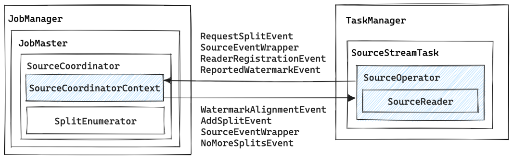
SourceCoordinatorContext与SourceOperator之间通过OperatorEvent进行交互, 具体来说:
SourceOperator主要会向SourceCoordinatorContext发送:RequestSplitEvent来向SourceCoordinator请求需要读取的Split, 在Kafka Connector中,SourceCoordinator总是主动向SourceOperator分配Split.ReaderRegistrationEvent来向SourceCoordinator注册当前Reader.ReportedWatermarkEvent来向SourceCoordinator报告当前Reader的Watermark, 以便SourceCoordinator决定是否需要进行Watermark对齐.
SourceCoordinatorContext主要会向SourceOperator发送:AddSplitEvent来向SourceOperator分配Split.WatermarkAlignmentEvent来通知SourceOperator要进行Watermark对齐.NoMoreSplitsEvent来通知SourceOperator没有更多的Split了.
从宏观角度来看, FLIP-27最重要的变动就是将数据源的发现和数据的读取拆分开来, 作为两个独立的组件分别运行在JobMaster和Task中, 彼此之间通过RPC进行通信. 在这个整体框架下, 很多细节问题就变得很好解决了, 比如Watermark的对齐可以通过全局的SourceCoordinator方便地实现.
核心接口
在FLIP-27中, 最核心的两个接口是SplitEnumerator和SourceReader. 其中:
SplitEnumerator用于发现Splits并将其分配给SourceReader.SourceReader用于从给定的Splits中读取数据.
除上述两个接口是公共接口外, 其他几个公共接口如下, 在实现Connector时需要频繁使用这些接口:
Source: 实际上是一个工厂类, 用于创建SplitEnumerator和SourceReader.SourceSplit: 分区的抽象接口, 用于表示一个Partition/Shard/Split.SplitEnumeratorContext: 用于为SplitEnumerator提供上下文信息, 保存已分配的分区, 并向SourceReader发送事件消息(如分配一个新的分区).SplitAssignment: 用于保存分配给各个子任务的分区.SourceReaderContext: 用于SourceReader和SplitEnumerator之间的通信.SplitReader: 从一个或多个分区中读取数据.SplitFetcherManager: 用于管理SplitFetcher,SplitFetcher调用SplitReader进行数据读取, 运行在SplitFetcherManager的线程池中.SourceOutput: Collector样式的接口, 用于获取SourceReader发出的记录和时间戳.WatermarkOutput: 用于发送Watermark, 并指示Source是否空闲.Watermark: 这是在org.apache.flink.api.common.eventtime包中新建的Watermark类. 这个类最终将替换org.apache.flink.stream.api.Watermark. 这个更改允许flink-core独立于其他模块. 因为最终Watermark的生成将会被放到Source中. (关于为什么要将Watermark的生成放到Source中可参考笔者之前的博文Flink最佳实践 - Watermark原理及实践问题解析)
KafkaSource执行流程
上文介绍了FLIP-27中引入的几个新接口, 接下来本文将以KafkaSource为例, 介绍这些接口的执行和交互流程. 如果不做特殊说明, 本文在描述时将以Kafka Connector的具体实现类为准, 其中某些方法可能实现在父类中, 在阅读源码时需要稍加注意.
Split分配流程
Split分配流程由KafkaSourceEnumerator实现, 它是SplitEnumerator的实现类, 运行在JobMaster中. 整个Split的分配流程如下图所示:
- 在JobMaster中会启动一个
SourceCoordinator, 在它的start()方法中会调用KafkaSourceEnumerator的start()方法来启动Split分配. KafkaSourceEnumerator的start()方法会根据用户配置, 选择定时或一次调用getSubscribedTopicPartitions()和checkPartitionChanges(). 其中:getSubscribedTopicPartitions()通过Kafka客户端获取指定Topic的所有Partition, 并将结果传递给checkPartitionChanges();checkPartitionChanges()会调用getPartitionChange()来根据已经分配的Partition判断哪些Partition是新增的, 哪些是删除的(实际上删除的Partition在目前的实现中没有做任何处理).
- 当获取到新增和删除的Partition之后,
checkPartitionChanges()会调用initializePartitionSplits()和handlePartitionSplitChanges(), 其中:initializePartitionSplits()用于初始化各个Partition的起始和结束Offset. 结果会传递给handlePartitionSplitChanges();handlePartitionSplitChanges()会先调用addPartitionSplitChangeToPendingAssignments()来计算各个Partition所属的SourceReader, 之后调用assignPendingPartitionSplits()来向SourceOperator发送消息分配Partition.
- 真正分配Partition的消息由
SourceCoordinatorContext的assignSplits()方法通过发送AddSplitEvent来实现. TaskManager接收到消息后会交由SourceOperator进行处理, 详细的处理过程会在下文分析.
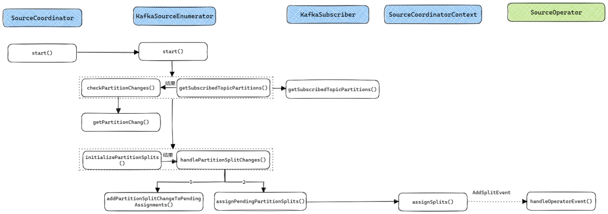
可以看到KafkaSourceEnumerator的Partition分配流程还是比较复杂的, 不过在把握整体流程之后再阅读各个函数的代码, 其实也不难理解.
数据读取流程
当KafkaSourceReader接收到来自KafkaSourceEnumerator分配的Partition之后, 就会开始真正进行数据读取了. 数据读取的整体流程还是比较简单的, KafkaSourceReader运行在Task主线程中, 非阻塞地从FutureCompletingBlockingQueue中获取数据, 如果有数据就使用KafkaRecordEmitter向下游发送数据. SplitFetcher是真正的IO线程, 通过KafkaPartitionSplitReader从Kafka读取数据后放入FutureCompletingBlockingQueue.
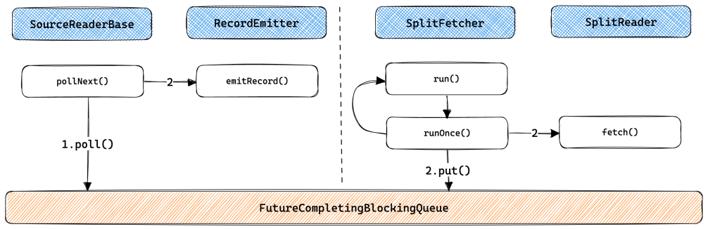
数据读取流程的核心在于IO线程模型的实现, 可通过SplitFetcherManager进行控制. 多数实现都是以下线程模型中的一种:
Sequential Single Split, 即单个IO线程依次顺序读取各个Split, 这种模型一般用在文件, 数据库查询等有界数据场景.
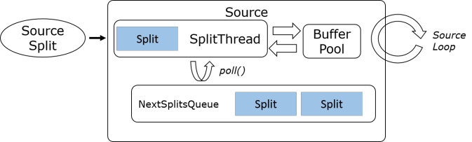
Multi-split Multiplexed, 即单个IO线程复用以读取多个Split, 一般用在支持多路复用客户端的组件上, 如Kafka.
Multi-split Multi-threaded, 即一个IO线程读取一个Split, 一般用在Amazon Kinesis, 阿里云SLS等产品上.

SplitFetcher生命周期
通过上文的分析我们已经知道, SplitFetcher是真正从数据源读取数据的任务, 它继承自Runnable并运行在SplitFetcherManager的线程池中. SplitFetcher任务的状态在运行过程中会不断发生变化, 笔者将SplitFetcher的生命周期总结为以下四个状态(需要注意的是这几个状态是笔者总结的逻辑上的状态, 并不与Java线程的状态完全对应):
- Running: 当
SplitFetcherManager创建并向线程池提交SplitFetcher任务之后就进入了Runnning状态. Running状态的SplitFetcher可能是在真正地读取数据(对应的JVM线程状态为RUNNABLE, WAITING或TIME_WAITING), 也可能在等待Split的分配(如刚启动时的场景, 对应的JVM线程状态为WAITING). - Pause: 为了在多个Split之间进行Watermark对齐,
SplitFetcher提供了三个接口:pauseOrResumeSplits(): 会调用SplitReader.pauseOrResumeSplits(), 适用于KafkaConsumer这类提供了暂停或继续读取指定Split的客户端接口.pause(): 通过设置SplitFetcher的paused标志位为true来暂停SplitFetcher任务.resume(): 通过设置SplitFetcher的paused标志位为false, 并调用resumed.signal()来继续执行SplitFetcher任务.
- Idle: 如果
SplitFetcher完成了所有Split的数据读取, 就会进入Idle状态. 对应的JVM线程状态为WAITING. - Closed: 进入Idle状态的
SplitFetcher将会被关闭而进入Closed状态.
从JVM线程的角度来看,
SplitFetcher线程进入WAITING/TIME_WAITING状态的可能原因有两个:
- 在读取数据时, 即在
SplitReader.fetch()中等待, 如KafkaConsumer.poll()会因为暂时获取不到数据而等待.assignedSplits和taskQueue均为空, 等待需要等待任务.
SplitFetcher的生命周期受SourceReader的控制, 其控制逻辑如下图所示. 其中紫色阴影块会调用SplitFetcher对其生命周期进行控制.
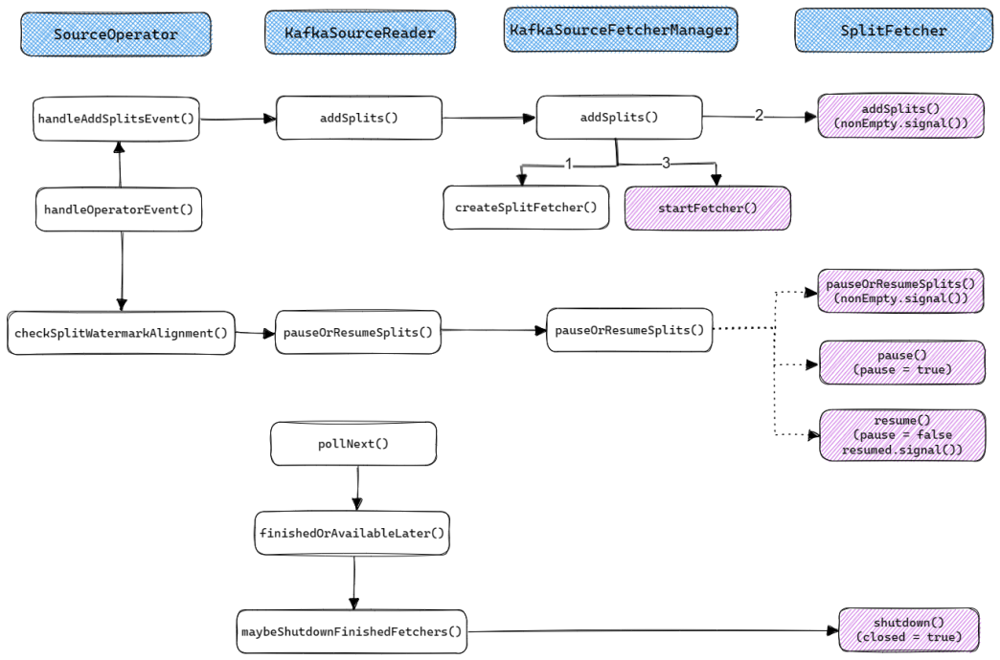
上图展示了SourceReader是如何通过SplitFetcherManager来控制SplitFetcher任务的. 接下来我们再来分析下SplitFetcher内部的执行逻辑. 其整体执行流程如下图所示:
- 在
SplitFetcher的run()方法中会通过一个while循环不断运行runOnce()方法. SourceReader在pollNext()方法中会调用maybeShutdownFinishedFetchers()来判断对应的SplitFetcher是否处于Idle状态, 如果是则调用SplitFetcher.shutdown()来关闭该SplitFetcher(设置closed为true), 之后runOnce()将进入步骤3.1.- 如果各个Split之间的Watermark差距过大,
SourceReader会调用SplitReader的pauseOrResumeSplits()或pause()来暂停当前任务, 之后runOnce()将进入步骤4.1. 后续会调用pauseOrResumeSplits()或resume()来继续任务. - 如果当前没有被分配的Split, 也没有需要执行的任务(如添加Split), 那么
SplitFetcher将进入WAITING状态, 直到addSplits(),pauseOrResumeSplits()或enqueueTask()(在KafkaSource中提交Offset时将调用次方法)被调用.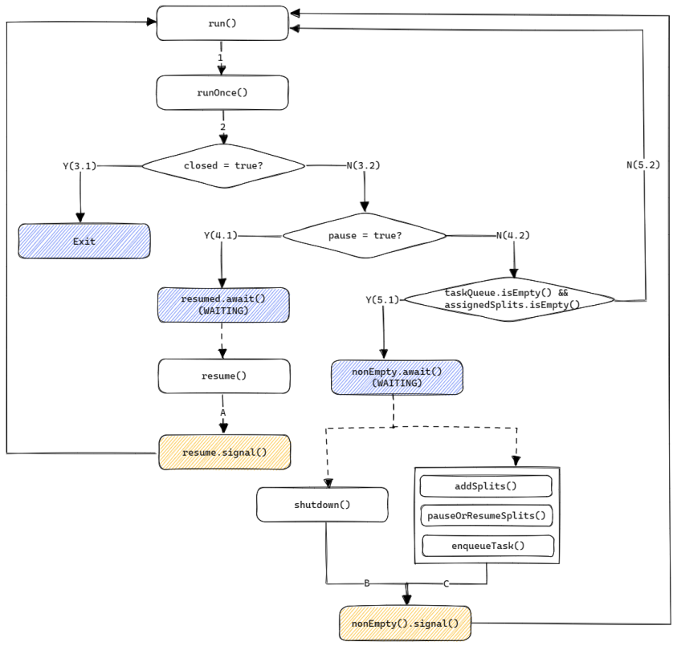
SpliteFetcher是真正实现数据读取的任务, 理解它的生命周期和执行流程是理解新版Source接口的核心之一.
Watermark对齐流程
新Source接口中一个十分重要的特性就是Watermark对齐, 用于解决Event Time倾斜问题. 在Flink 1.15及之后的版本中可以通过如下方式指定对齐参数.
1 | WatermarkStrategy |
FLIP-296对SQL层Watermark相关的支持进行了完善, 支持在WITH参数中指定上述参数, 示例代码如下, 这一特性在Flink 1.18中发布.
1 | CREATE TABLE user_actions ( |
Watermark的对齐需要SourceCoordinator和SourceOperator配合进行. 整体的交互流程如下图所示:
SourceOperator会定期上报Watermark(时间间隔由updateInterval参数指定), 在实现上Mailbox线程最终会调用emitNext(), 如果SourceOperator不处于READING状态, 就会调用emitNextNotReading(), 它会在初始化时通过ProcessingTimeService启动一个定时任务, 定期调用emitLatestWatermark()向SourceCoordinator发送ReportWatermarkEvent事件, 最终SourceCoordinator.handleEventFromOperator()会处理该事件.SourceCoordinator会定期下发Watermark对齐事件(时间间隔由updateInterval参数指定), 在实现上其构造函数中会利用SourceCoordinator启动一个定时任务, 定期调用announceCombinedWatermark()向SourceOperator发送WatermarkAlignmentEvent, 最终SourceOperator.handleOperatorEvent()会处理该事件.
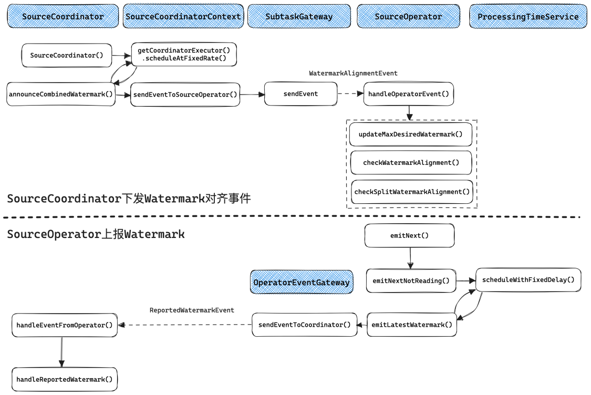
上文介绍了Watermark对齐的整体交互流程. 在具体实现上, SourceCoordinator端的实现比较简单, 就是将各个SourceOperator上报的Watermark聚合, 选出最小的Watermark值, 将其加上maxAllowedWatermarkDrift之后定期下发给SourceOperator, 作为允许读取的最大Watermark.
SourceOperator端的Watermark对齐流程相对复杂一些. FLIP-182提出了SourceOperator级别的Watermark对齐, 可以支持一个SourceOperator仅读取一个Split的场景, 在Flink 1.15及之后的版本中可用. FLIP-217提出了Split级别的Watermark对齐, 支持一个SourceOperator读取多个Split的场景, 在Flink 1.17及之后的版本中可用. 整体的对齐流程如下图所示.
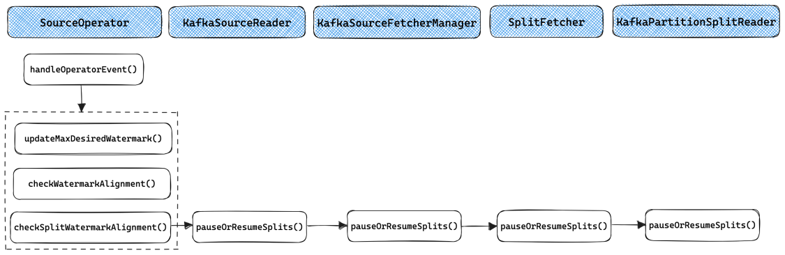
SourceOperator级别的对齐在checkWatermarkAlignment()中实现, 其核心代码如下. 如果当前SourceOperator处于READING状态, 且需要对齐则重置waitingForAlignmentFuture变量, Mailbox主线程会调用getAvailableFuture()来获取SourceOperator的可用性, 如果此时waitingForAlignmentFuture不处于结束状态则代表当前SourceOperator需要阻塞等待Watermark对齐; 如果当前SourceOperator处于WAITING_FOR_ALIGNMENT状态, 且不需要对齐则结束waitingForAlignmentFuture, SourceOperator重新回到运行状态.
1 | @Internal |
Split级别的Watermark对齐在checkSplitWatermarkAlignment()中实现, 其调用链较长, 如上图所示. 最终的实现在KafkaPartitionSplitReader.pauseOrResumeSplits()中, 通过KafkaConsumer提供的pause()和resume()两个方法分别用于停止和继续读取相应的Partition. 此外, 对于Multi-split Multi-threaded模式的实现, 由于一个SplitFetcher仅读取一个Split, 在需要对齐时可直接在SplitFetcherManager.pauseOrResumeSplits()通过SplitFetcher.pause()和SplitFetcher.resume()将指定的SplitFetcher暂停或唤醒.
Checkpoint和Failover流程
除了Split分配和数据读取流程, 在生产环境中还需要关注的是Checkpoint流程和Failover流程.
KafkaSourceEnumerator的Checkpoint流程比较简单, 当Checkpoint触发时SourceCoordinator的checkpointCoordinatot()会调用KafkaSourceEnumerator的snapshotState(), 需要在状态中保存的仅有KafkaSourceEnumerator的Set<TopicPartition> assignedPartitions, 即已经分配的Partititions. 当Checpoint成功或失败时会分别回调notifyCheckpointComplete()和notifyCheckpointAborted(), 这两个函数其实都没有做任何实现.
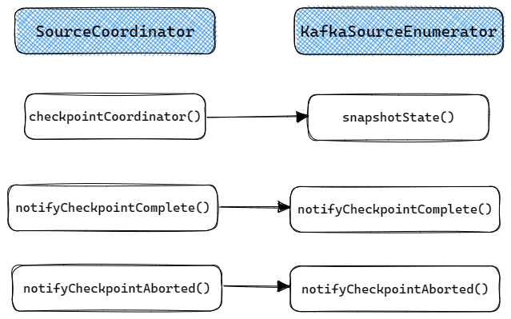
KafkaSourceReader的Checkpoint流程如下. 当Checkpoint触发时, KafkaSourceReader的snapshotState()将被调用用于保存当前Reader已经被分配的Split(SourceReaderBase中的splitStates变量保存了当前Reader已经被分配的所有Split). 当Checkpoint完成时notifyCheckpointComplete()会被调用, 用于向Kafka提交Offset.
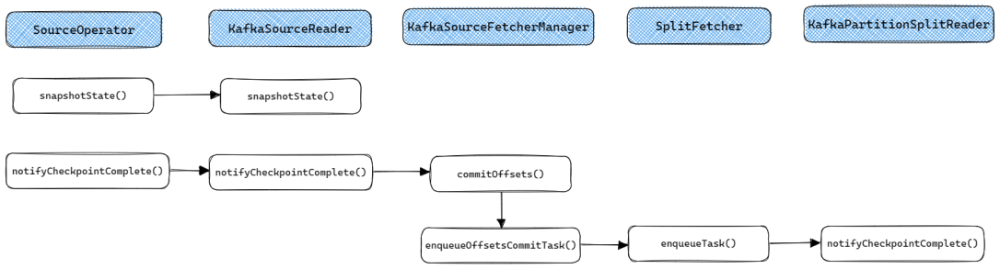
KafkaSourceEnumerator的Failover流程如下, 主要分为两部分:
- 如果出现Global Failover那么
SourceCoordinator将会调用resetToCheckpoint()来重置整个KafkaSourceEnumerator, 其中的assignedPartitions会被初始化为Checkpoint中的状态, 之后按启动流程重新启动即可. - 如果出现Partial Failover那么
SourceCoordinator的subtaskReset()将会调用KafkaSourceEnumerator的addSplitsBack()来将上次Checkpoint之后还没有分配给Reader的Split分配给对应的Reader.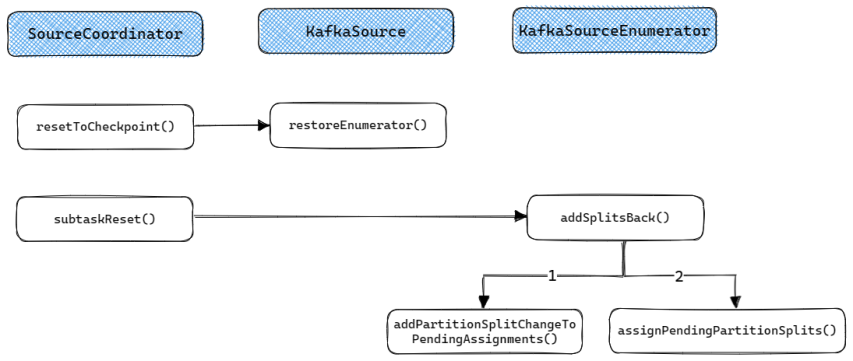
KafkaReader的Failover流程比较简单, 重启时在SourceOperator的open()函数中会重新加载当前Reader中已经被分配的所有Split(即原来SourceReaderBase中的splitStates变量保存的内容), 并重新调用addSplits()分配给SplitFetcher.
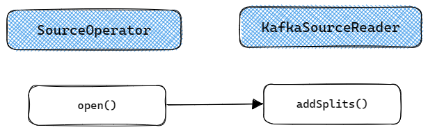
总结
本文以Kafka Connetcor为例, 详细介绍了FLIP-27中提出的新版Source接口的实现原理. 可以看到, 新版的Source接口在设计上还是比较巧妙的, 主要的亮点是解耦了分区发现和数据读取的流程, 简化了动态分区发现的实现. 另外通过对分区的抽象在流批处理上进行了统一. 不过Source的实现本身比较复杂, 实现一个生产可用的Source并不简单, 需要理解各个接口的执行和交互细节, 本文对其中的细节进行了详细介绍, 相信有助于实现新的Source Connector.
参考
[1] FLIP-27: Refactor Source Interface
[2] FLIP-27: Refactor Source Interface-Apache Mail Archives
[3] FLIP-182: Support watermark alignment of FLIP-27 Sources
[4] FLIP-217: Support watermark alignment of source splits
[5] 漫谈Flink Source接口重构
本博客所有文章除特别声明外, 均采用CC BY-NC-SA 3.0 CN许可协议. 转载请注明出处!
关注笔者微信公众号获得最新文章推送